Introduction
Prior to graduation, all DRSS students must complete a 72-hour internship. An internship is where one works alongside a professional to learn about their career. Over the Summer, I completed my internship at Habitat Environmental Center in Kettering. Because my internship was completed in the Summer, I basically acted as a camp counselor. Below are the daily logs I completed during my internship
Log 1
On Monday, the first day of CSI Camp, an officer from the Kettering Police Department taught the kids about his job. Officer Ed presented on how he became an officer, the different jobs he performed, and crime scene basics.
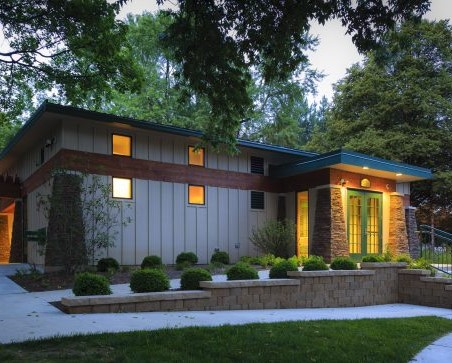Log 2
An officer from the environmental crimes division spoke about environmental crimes. She used graphics to demonstrate what an environmental crime was, then took the kids outside for an activity. The kids investigated an environmental “crime scene” that had been staged by another volunteer and me.
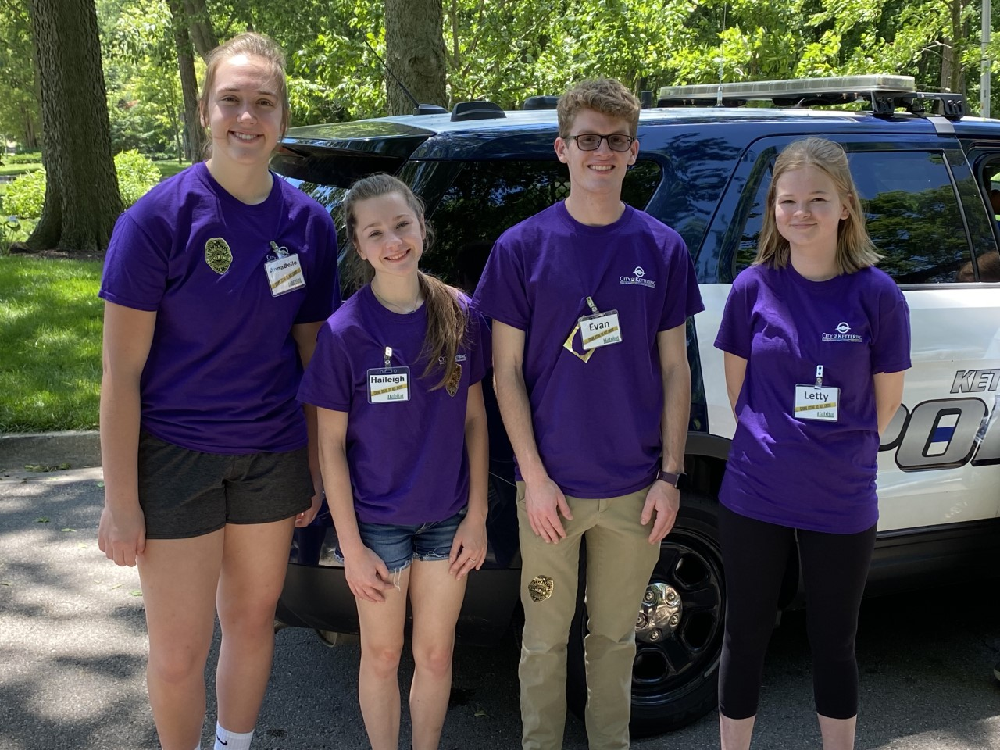Log 3
The kids learned about the different types of animals they may see in their yards. Officer Shelly from animal control informed the children what to do if they encountered these animals, and taught them how to identify animals.
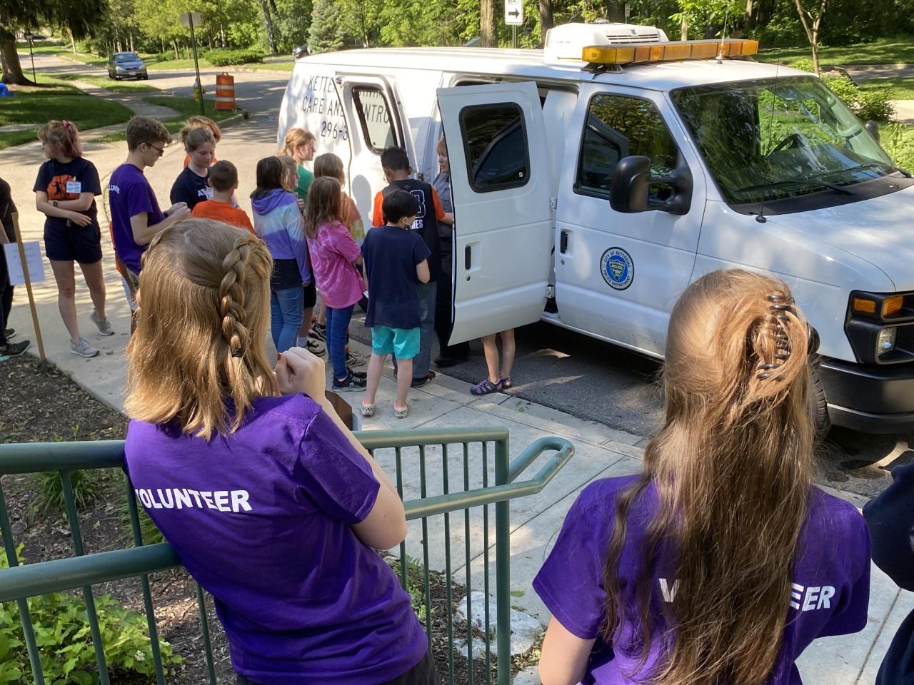Log 4
A pair of motorcycle and bicycle officers spoke to the children about their careers. Meanwhile, I set up an activity for the campers.
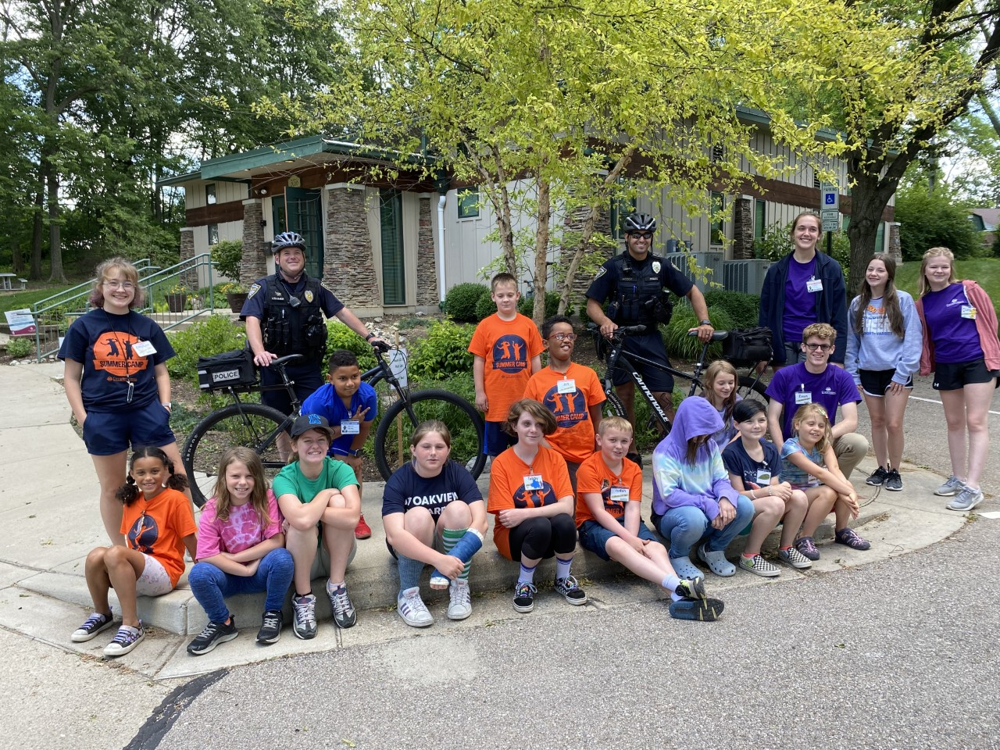Log 5
On the last day of CSI camp, the kids were instructed in self-defense by a school resource officer and met a police dog. The last day of camp consisted mostly of games, which I helped facilitate.
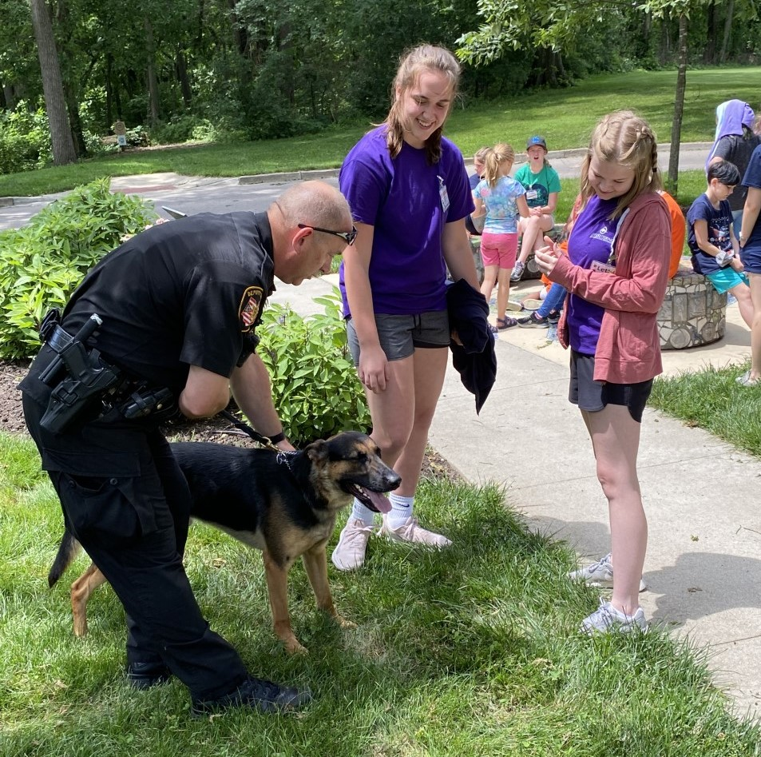Log 6
On the first day of Outdoor Adventures Camp, the campers created walking sticks and learned about trail markers. After, we went outside and completed a trail marker activity.
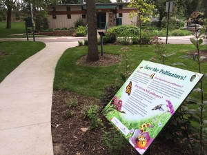Log 7
The campers watched a presentation about wild animals. Then, other volunteers and I showed the campers how to cast molds of animal pawprints.
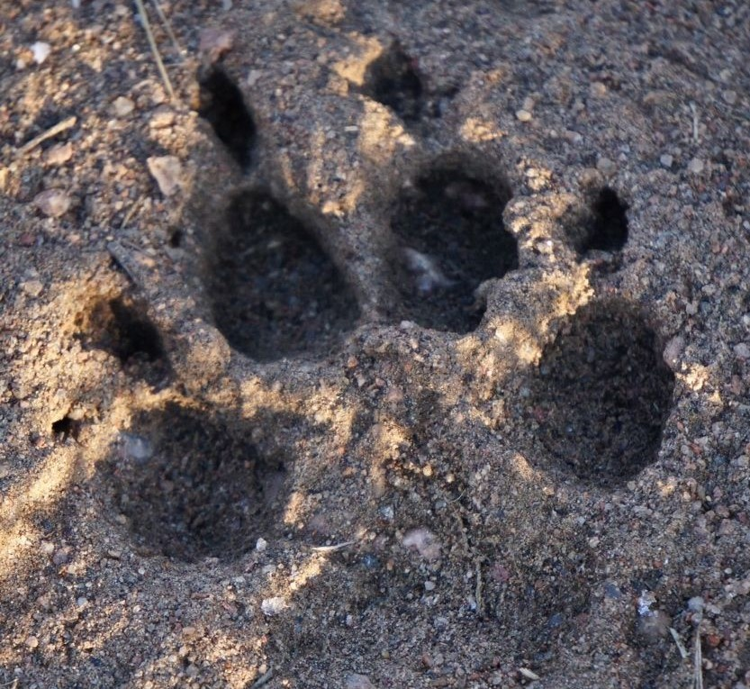Log 8
All the campers went on a hike to a local park. I hiked alongside the campers, helping the little ones who could not keep up.
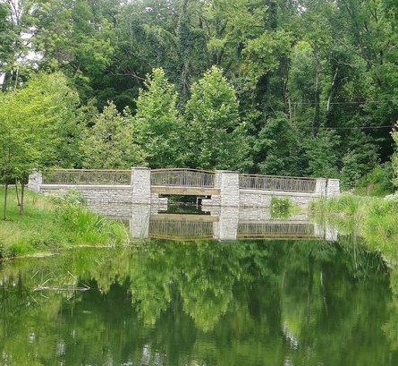Log 9
The camp was held at a local fishing pond where several volunteers and I showed the kids how to fish. The whole day was spent at the pond, and campers who didn’t want to fish could learn archery. (I caught a catfish)
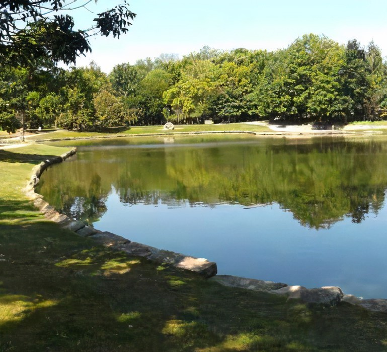Log 10
On the last day of Outdoor Adventures Camp, the campers learned about camping. I aided in pitching tents, and we later roasted smores.
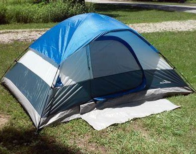Internship Write-Up
My internship experience was interesting to say the least. While I enjoyed my time at the Habitat Environmental Center, I was under the impression I would be doing conservation work rather than act as a camp counselor. There were two camps I helped with; crime scene investigation camp and outdoor adventures camp. Each camp lasted five days, with each day lasting eight hours. This made my internship amount to 80 hours. I am really interested in conservation and environmental protection, so I was somewhat disappointed neither of the camps I interned at related to the subject, but I made the most of it. Each day I would greet the campers and help them settle in, then we would prepare for the day. During CSI camp we would wait for a speaker to join us, then spend the afternoon with them. Outdoor adventures camp was much more interesting because after everyone was settled, we would go outside. We went on hikes, fished, made walking sticks, made trail markers, and played games.
Even though hanging out with the campers was pretty fun, I found myself absolutely exhausted at the end of the day. During CSI week especially, it was very hard to find the motivation to stay positive or have a professional attitude during the day. After spending eight hours with 8 to 12-year-olds, I would go to work and spend four more hours instructing preschool gymnastics. My responsibilities and obligations piled up the two weeks of my internship and I struggled to balance it all. There wasn’t really a solution to this obstacle, so the only thing I could do was get as much sleep as possible and try to remain positive. I forced myself to remain engaged with the campers and our activities, and made friends with some of the other counselors. Interacting with counselors around my age definitely helped me maintain a professional attitude.
As I previously mentioned, there were two summer camps I interned at. Each camp could definitely count as a project, because there was a clear objective to meet: educate the campers about either crime scene investigation or outdoor activities. I helped meet the objective by instructing and monitoring the campers and setting up activities for them. Within the outdoor adventures camp especially, there were several small projects I helped to complete too. When the campers completed activities such as decorating walking sticks or building trail markers, I was to one to help them. These small projects amounted into the end goal of teaching young kids about the outdoors. The crime scene investigation camp was not as hands on as the other camp, but it was definitely informative. Because this camp consisted of listening to guest speakers, there were not many mini-projects to be completed. However, I think the whole camp could be considered a project because the campers learned a lot.
I don’t want to sound harsh, but this internship experience taught me I do not want a career where I interact with older elementary and middle school aged children. While engaging with them was fun at times, it was also exhausting, not to mention challenging. Finding ways to have fun with the campers, while also maintaining an authoritarian role was difficult at times, but I think I did a pretty good job. I also learned I wanted to explore the medical field. A small part of the outdoor adventure camp was learning about field medicine, which I thought was the most interesting subject. The medical field has always interested me, I even wanted to be a surgeon. I am passionate about healing people and also learning about the environment, but I think I am more suited towards a medical career. I also learned that I am not the most patient person. Even though I work with preschoolers as my job, I struggled to remain patient with the older campers. This also goes to show, a career involving the instruction of middle school aged kids would not be fulfilling to me.
Overall, I would say the internship was fun, even though it wasn’t what I had expected. I had wished to learn more about environmental topics, such as conservation or clean energy, but I learned about myself and clarified some career goals I had set for my life. The best part of my internship was the people I met. I have since volunteered multiple times with the Habitat Environmental Center. Because the center is owned by the city of Kettering, I have also been able to help out with city events. This has given me the opportunity to meet even more people and do work I am passionate about.
Mentor Evaluation
As a requirement of the internship assignment, my mentor completed an evaluation form, which reviews my performance as an intern. This document is shown below, and if you wish to download it as a PDF, simply click the image.
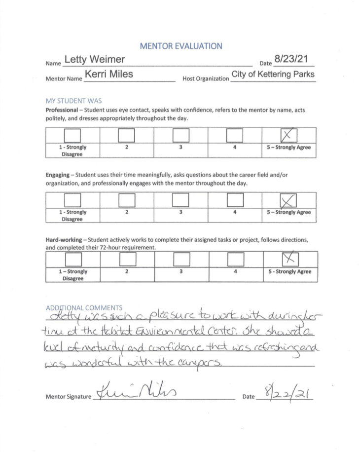